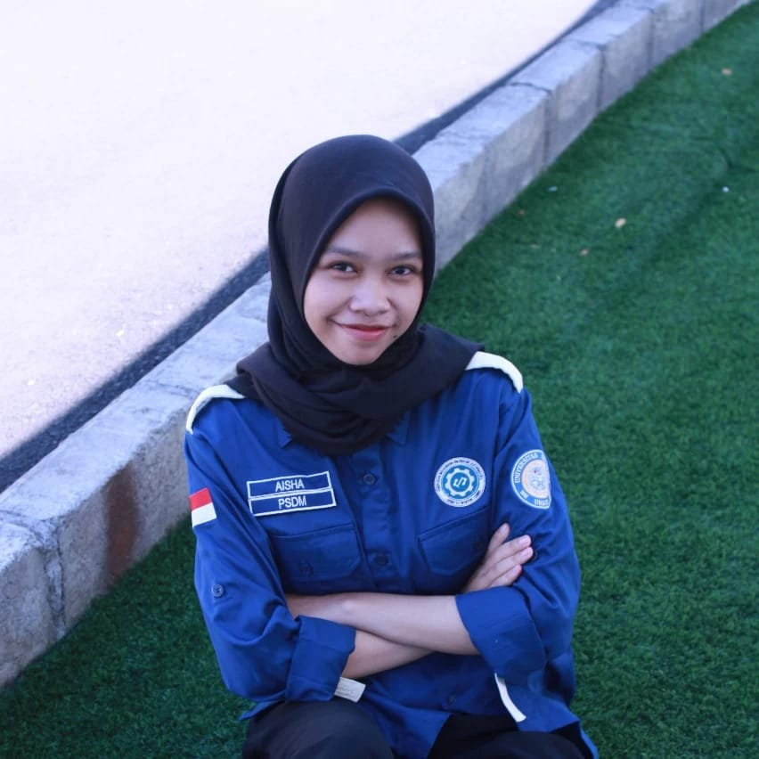

Aisha Laily Purwanto
Halo! Saya Aisha Laily Purwanto, mahasiswa Teknik Informatika di Universitas Airlangga
Saya suka mengubah ide menjadi aplikasi yang fungsional dan berpusat pada pengguna, serta terus berkembang setiap hari sebagai calon software developer.
Lihat Proyek Lihat CV
Biografi
Saya adalah mahasiswa semester 6 Teknik Informatika Universitas Airlangga yang memiliki fokus pada pengembangan web menggunakan Laravel, pengembangan frontend, serta analisis data. Berpengalaman dalam membangun aplikasi berbasis web dan mobile melalui proyek akademik, serta aktif dalam organisasi yang mengasah kemampuan kerja tim, komunikasi, dan kepemimpinan.
Saya terus berupaya meningkatkan kemampuan analitis dan pemecahan masalah. Tujuan saya adalah berkembang menjadi software developer profesional yang mampu menciptakan solusi digital yang berdampak.
Curriculum Vitae (CV)
My GitHub Projects
Berikut beberapa repositori publik terbaru saya dari GitHub.
Refleksi
Selama perjalanan akademik saya di Universitas Airlangga, saya belajar bahwa pertumbuhan tidak hanya datang dari ilmu pengetahuan, tetapi juga dari pengalaman dan ketekunan. Belajar Teknik Informatika telah membentuk cara saya berpikir—mendorong saya untuk menghadapi setiap tantangan dengan logika, kreativitas, dan empati.
Keterlibatan saya di organisasi HIMTI mengajarkan pelajaran berharga tentang kerja tim, kepemimpinan, dan komunikasi. Memimpin divisi dan menyelenggarakan acara seperti KSK Inisialisasi dan Guest Lecture membantu saya memperkuat kemampuan pemecahan masalah dan manajemen waktu.
Seiring saya terus mengembangkan keahlian dalam pengembangan software, desain UI/UX, dan analisis data, saya bertujuan membangun solusi yang tidak hanya fungsional tetapi juga bermakna bagi banyak orang.